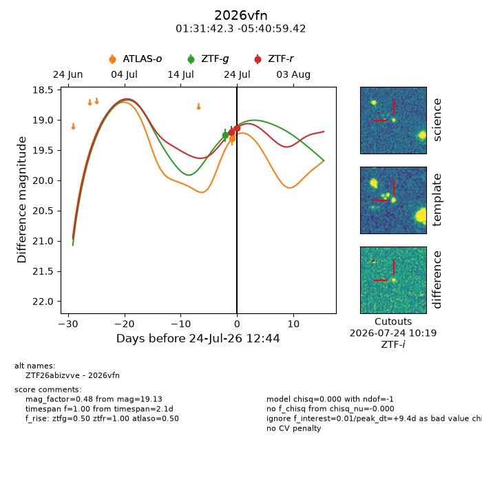
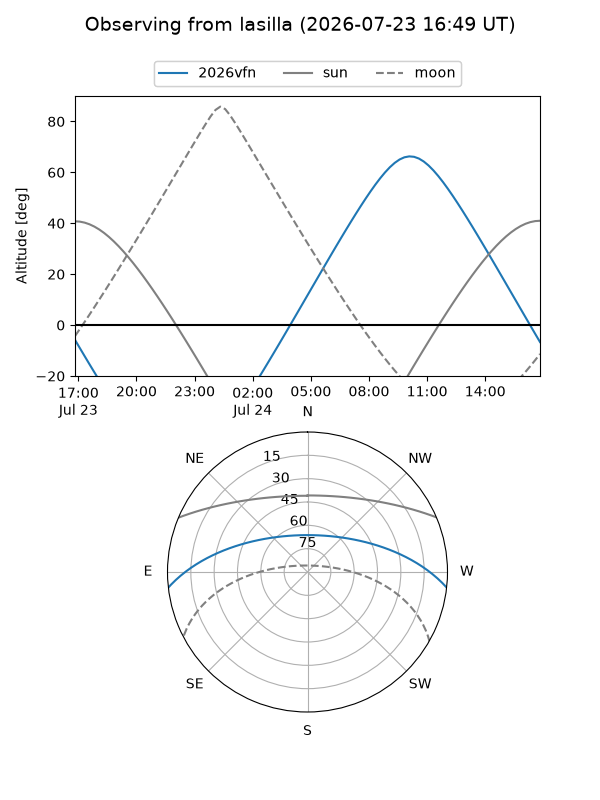
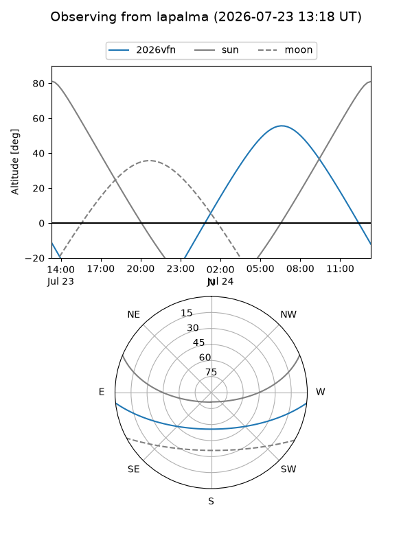
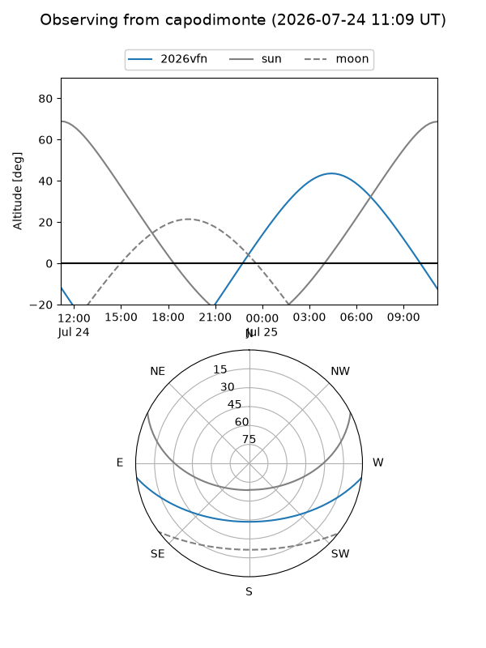
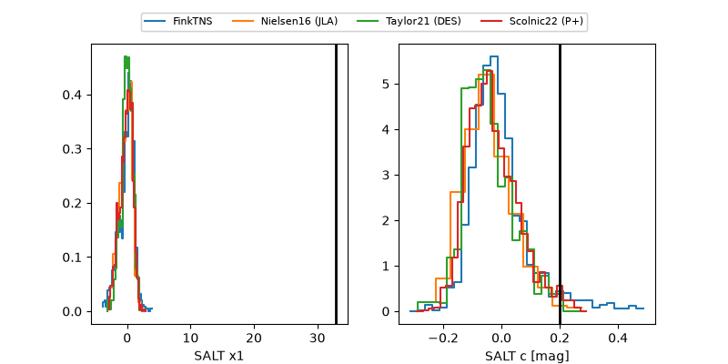

2026vfn
Target 2026vfn at 2026-07-24 12:46
Aliases and brokers:
FINK-ZTF: ztf.fink-portal.org/ZTF26abizvve
Lasair-ZTF: lasair-ztf.lsst.ac.uk/objects/ZTF26abizvve
ALeRCE-ZTF: alerce.online/object/ZTF26abizvve
YSE-PZ: ziggy.ucolick.org/yse/transient_detail/2026vfn
TNS name: wis-tns.org/object/2026vfn
Direct TNS query: direct search
alt names
ZTF26abizvve (ztf,fink_ztf)
2026vfn (tns,yse)
Coordinates:
equatorial (ra, dec) = 22.9263,-5.68317
equatorial (HMS+DMS) = 01:31:42.32,-05:40:59.42
galactic (l, b) = (148.8060,-66.51062)
Flags:
TNS type: nan
peak dt: +9.4
Photometry:
last atlaso=19.31, ztfg=19.25, ztfr=19.13
1 atlaso, 1 ztfg, 2 ztfr detections
Lightcurve

Visibility



Additional plots
